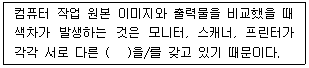
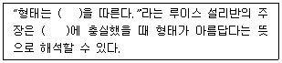
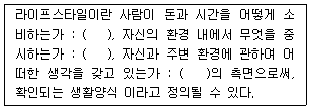

시각디자인산업기사 (2013-09-28 기출문제)
1과목: 색채학
1. 4도 원색 제판에서 마젠타 판을 얻기 위해 사용되는 색분해용 필터는?
- Red 필터
- Blue 필터
- Cyan 필터
- Green 필터
(정답률: 67%)

2. 난색계통의 색상에 더욱 흥분감을 주기 위한 명도와 채도는?
- 고명도, 고채도
- 고명도, 저채도
- 저명도, 고채도
- 저명도, 저채도
(정답률: 85%)
3. 시내버스, 지하철, 기차 등의 색채계획 시 고려할 사항으로 거리가 먼 것은?
- 도장 공정이 간단해야 한다.
- 조색이 용이해야 한다.
- 쉽게 변색, 퇴색되지 않아야 한다.
- 차별성이 있는 특수도료이어야 한다.
(정답률: 78%)
4. 먼셀의 색표시 기호 중 V가 의미하는 것은?
- 색상
- 명도
- 채도
- 톤
(정답률: 83%)
5. 다음 중 먼셀 색 입체의 수직단면도 상에서 가장 위부분에 위치하는 것은?
- 7.5R 4/6
- 5YR 5/10
- 10P 9/2
- 2.5GY 2/1
(정답률: 67%)
6. 하나의 색상에서 무채색의 포함량이 가장 적은 색은?
- 순색
- 탁색
- 명청색
- 암청색
(정답률: 83%)
7. 먼셀(Munsell) 색체계에 대한 설명 중 옳은 것은?
- 세로축에 색상, 원주상에 명도, 방사사축을 채도로 구성하였다.
- 한국산업표준에서 채택한 색체계이다.
- 적(R), 녹(G), 청(B)이 기본 3색이다.
- 명도를 나타낼 때는 Chroma로 표시한다.
(정답률: 71%)
8. 다음 중 천정이 낮을 경우 높아 보이게 할 수 있는 가장 효과적인 배색은?
- 밝은 한색 계열
- 밝은 난색 계열
- 어두운 중성색 계열
- 어두운 난색 게열
(정답률: 78%)
9. 색채계획에서 이미지 스케일을 만드는데 형용사 표현이 잘못 짝지어진 것은?
- 따뜻함 - 차가움
- 부드러움 - 딱딱함
- 선명함 - 은은함
- 어두운 난색 계열
(정답률: 84%)
10. 다음 중 먼셀의 색체계에서 가장 채도가 높은 색은?
- 빨강(5R)
- 연두(5GY)
- 녹색(5G)
- 자주(5RP)
(정답률: 87%)
11. 중간혼합에 대한 설명으로 틀린 것은?
- 회전혼합된 색의 명도는 혼합하려는 색 중 가장 낮은 명도와 가깝게 된다.
- 시닌상파들의 회화에서 도입한 것은 중간혼합 중 병치혼합이다.
- 회전혼합은 맥스웰(James C. Maxwell)이 처음 발견하였다.
- 컬러TV는 색광의 병치혼합을 응용한 예이다.
(정답률: 65%)
12. 원색인쇄의 색분해, 스포트라이트, 컬러TV 등에 이용되는 색채혼합은?
- 중간혼합
- 회전혼합
- 가산혼합
- 감산혼합
(정답률: 82%)
13. 중량감에 관한 색의 심리적인 효과에 가장 영향이 큰 것은?
- 명도
- 순도
- 색상
- 채도
(정답률: 88%)
14. 안전색채를 선정할 경우 고려할 사항이 아닌 것은?
- 색채를 사용해왔던 관습을 고려할 것
- 색채로서 직감적인 연상을 일으킬 수 있을 것
- 색채로서 화려해야 할 것
- 색채가 가지고 있는 흥분작용과 침정작용을 이용할 것
(정답률: 90%)
15. 태양광선이 프리즘을 통하면 스펙트럼이 형성된다는 것을 처음 발표한 사람은?
- 헤링
- 헬름흘츠
- 뉴튼
- 토마스 영
(정답률: 83%)
16. 오스트발트의 색채조화론과 가장 관계가 깊은 것은?
- 대비(contrast) 조화
- 등색상 삼각형에 있어서의 조화
- 미도(aesthetic measure)
- 스칼라 모멘트(scalar moment)
(정답률: 59%)
17. 감성적으로 다루어졌던 색채조화론의 미흡한 점을 제거하고 보다 과학적으로 설명할 수 있는 정량적 색채조화론을 제시한 사람은?
- 문, 스펜서
- 슈브럴
- 조영우발트
- 비렌
(정답률: 82%)
18. 적색을 보고 난 후 노랑을 보았을 때 노랑이 연두로 보이는 현상과 관련 있는 것은?
- 계시대비
- 명암대비
- 보색대비
- 색상대비
(정답률: 75%)
19. 오스트발트 색체계에서 등순계열의 조화에 해당하는 것은?
- ca - ea - ga - ia
- pa - pc - pe - pg
- ie - le - ne - pe
- gc - ie - lg - ni
(정답률: 34%)
20. 보기의 ( )에 적합한 용어는?

- 팔레트
- 색채
- 표준색
- 색역
(정답률: 79%)
2과목: 인쇄 및 사진기법
21. 움직이는 물체에 카메라가 따라 가면서 촬영하는 방법은?
- 프레이밍
- 패닝
- 포트레이트
- 비네트
(정답률: 87%)
22. 컬러 필름의 각층(R, G, B)은 연상을 하면 보색으로 발색한다. 보색 관계를 옳게 짝지은 것은?
- B - C, G - M, R - Y
- B - Y, G - M, R - C
- B - M, G - C, R - Y
- B - C, G - Y, R - M
(정답률: 72%)
23. 종이의 시험법 중 잉크나 물에 대한 종이의 침투 저항성을 나타내는 것은?
- 백색도
- 흡유도
- 사이즈도
- 광택도
(정답률: 67%)
24. 잡지 표지으 윤내기로 가장 많이 사용하는 방법은?
- 폴리프로틸렌 라미네이트
- 폴리에스테르 필름 접합
- 파라핀 도포
- 광택니스 인쇄
(정답률: 68%)
25. 현재 이용되고 있는 컬러은염 감광재료의 색채현법은?
- 가산혼합
- 감산혼합
- 병치혼합
- 가색혼합
(정답률: 65%)
26. 불포화 지방산이 공기 중의 산소와 결합하여 건조되는 방식은?
- 침투 건조
- 냉각 건조
- 증발 건조
- 산화중합 건조
(정답률: 83%)
27. 가시광선의 파장 범위로 옳은 것은?
- 180 ~ 200nm
- 200 ~ 270nm
- 380 ~ 780nm
- 800 ~ 920nm
(정답률: 94%)
28. 인쇄 잉크의 제조에 들어가는 다음의 유기 안료 중 색소안료가 아닌 것은?
- 콜루이딘 레드
- 퍼머넌트 오렌지
- 벤지딘 옐로우
- 퍼머넌트 블루
(정답률: 40%)
29. 사진 현상 순서를 가장 바르게 나타낸 것은?
- 현상 → 수세 → 정지 → 건조 → 정착
- 현상 → 정지 → 정착 → 수세 → 건조
- 현상 → 정지 → 수세 → 정착 → 건조
- 현상 → 수세 → 정지 → 정착 → 건조
(정답률: 49%)
30. 건축물 사진을 촬영하려고 한다. 가장 적합한 카메라와 장비의 선택은?
- 135형 카메라, 망원렌즈 계통, 모터드라이브, 중형 플래시
- 4"×5"카메라, 광각 렌즈, 수평계, 삼각대
- 120형 카메라, 135 카메라 실내용 플래시, 줌 렌즈 계통
- 135형 카메라, 벨로우즈, 현미경 링스트로보
(정답률: 83%)
31. 인화할 Nagative의 농도가 연해서 작업이 어려울 때, 가장 손쉬운 조절 방법은?
- 약품의 희석 비율
- 노광시간
- 확대기의 집광방식
- 인화지의 호수
(정답률: 39%)
32. 인쇄기계의 형식 중 가장 오래된 방식은?
- 평압식
- 원압식
- 윤전식
- 결혼식
(정답률: 76%)
33. 다음 중 볼록판 재료로 사용되는 것이 아닌 것은?
- 고무
- 플라스틱
- 감광성 수지
- 알루미늄
(정답률: 54%)
34. 제책 방법 중 주간지 등에서 많이 이용하는 방법으로, 속장에 표지를 대고 펼쳐 놓은 다음에, 한 가운데를 실이나 철사로 매고 다시 한 가운데를 접어 표지와 함께 다듬재단을 하여 마무리하는 제책 방식은?
- 양장
- 호부장
- 중철
- 무선철
(정답률: 65%)
35. 상품명이나 제조회사명을 인쇄하여 상품에 붙이는 방식으로서, 인쇄 이외에 돋음내기, 따내기, 접합가공, 박찍기(hot stamping)가공 등을 연속으로 하는 구조로 되어 있는 것은?
- 전사 인쇄
- 라벨 인쇄
- 카본 인쇄
- 금속 인쇄
(정답률: 80%)
36. 인공광 조명 방법으로 좁은 조사각의 빛을 만들어 내는 조명은?
- 플러드라이트
- 반사판
- 반사조명
- 소포트라이트
(정답률: 63%)
37. 필름의 감광도에 대한 설명 중 옳은 것은?
- 빛에 대한 반응 속도이다.
- 고감도일수록 입상성이 좋다.
- 고감도일수록 늦게 반응한다.
- 정교한 사진일수록 고감도 필름을 사용한다.
(정답률: 50%)
38. 세계에서 가장 오랜된 현존 목판 인쇄물은?
- 백만탑다라니경
- 무구정광대다라니경
- 금강반야바라밀경
- 팔만대장경
(정답률: 77%)
39. 다음 중 가장 정밀하게 인쇄할 수 있는 스크린 선수(screen ruling, line/inch)는?
- 60 ~ 65
- 80 ~ 110
- 120 ~ 140
- 150 ~ 300
(정답률: 61%)
40. 암실 안에서 팬크로매틱 필름을 다룰 때 짧은 시간에 사용할 수 있는 안전등의 필터색은?
- 노란색 필터
- 오렌지색 필터
- 짙은 녹색 필터
- 보라색 필터
(정답률: 56%)
3과목: 시각디자인론
41. 디자인의 궁극적인 목적은?
- 인간에게 바람직한 삶을 영위할 수 있게 해 주고자 하는 것
- 인간에게 감각적인 표현의 형태를 제공하기 위한 것
- 인간에게 시대를 초월할 수 있는 자료를 제공하기 위한 것
- 인간에게 도피적 생활을 할 수 있도록 하기 위한 것
(정답률: 70%)
42. 기업이 소비자와 사회에 대해 일관된 이미지를 만들기 위한 종합적 표현 정책은?
- Symbol Mark
- Character
- Publicity
- Design Policy
(정답률: 57%)
43. 리듬(Rhythm)과 거리가 먼 것은?
- 물결의 파문 같은 선의 강약
- 파장과 같은 곡선의 반복
- 반복되지 않는 정체성
- 강약이나 장단의 주기성
(정답률: 94%)
44. 기업의 존재를 알리는 가장 효율적인 시각적 수단은?
- 기업의 심벌마크
- 기업의 인적구성
- 기업의 예산
- 기업의 세일즈 활동
(정답률: 91%)
45. 지형의 높고 낮음을 지도 위에 표시하는것과 같이 기준면을 정하고, 기준면에 평행한 평면을 같은 간격으로 잘라 평화면상에 투상한 수직투상은?
- 축측투상
- 복면투상
- 표고투상
- 수직투상
(정답률: 84%)
46. 다음 중 신문광고매체의 특성과 거리가 먼 것은?
- 신뢰성
- 안정성
- 편의성
- 단축성
(정답률: 66%)
47. 구매동기, 경쟁상품의 품질비교, 디자인에 대한 문제점, 디자인 개선에 대한 요구사항이 조사되는 디자인 관리의 요소는?
- 새로운 재료, 부품의 조사
- 소비자 여론조사
- 경쟁상품에 대한 조사
- 출판물에 대한 조사
(정답률: 83%)
48. 기업이미지 통일화 계획에 대한 설명으로 틀린 것은?
- 기업이 경영 이념이나 방침을 시각적으로 상징화한 것
- 기업에서 생산하는 대표적인 생산품을 시각적으로 형상화한 것
- 경영전략으로서의 디자인 조정과 체계적인 통합계획
- 기업이미지 형성에 영향을 미치는 글자체, 색상 등의 시각적 요소, 마인드 요소, 행동 요소를 구성됨
(정답률: 88%)
49. 원근에 의한 공간 표현의 방법이 아닌 것은?
- 평면 원근법
- 대기 원근법
- 과장 원근법
- 다각 원근법
(정답률: 60%)
50. 게슈탈트 심리학자들의 형태생리에 대한 연구법칙과 관련이 없는 것은?
- 절대성의 요인
- 유사성의 요인
- 근접성의 요인
- 폐쇄성의 요인
(정답률: 66%)
51. 바우하우스의 교육과정과 거리가 먼 것은?
- 공작교육
- 추상교육
- 형태교육
- 예비교육과 공방교육
(정답률: 84%)
52. 대상물의 보이지 않는 부분의 모양을 표시하는데 쓰이는 선은?
- 파선
- 실선
- 2점 쇄선
- 1점 쇄선
(정답률: 59%)
53. 기업 또는 제품의 개성이나 특징을 표현한 아이캐처로서 인물, 동식물의 의인화, 연상화 등으로 해학적 표현을 한 것은?
- 로고타입
- 심벌마크
- 마스코트
- 시그니처
(정답률: 91%)
54. 엄격함과 긴장감 및 경직된 인상을 주는 선은?
- 자유곡선
- 수직선
- 2점쇄선
- 1점쇄선
(정답률: 89%)
55. 다음 중 착시에 대한 설명이 틀린 것은?
- 물리적으로 동일하다는 사실이 확인 된 후에도 계속해서 왜곡되어 보이는 현상이다.
- 기하학적 도형들로 표현되는 착시 유형을 기학학적 착시라고 하며 순수착시라고도 한다.
- 어떤 오브제의 사용 없이 순수하게 눈과 시신경, 뇌의 상호작용에 의해 착시현상이 유발될 수 있다.
- 입체, 공간에 관한 착시는 창의적 디자인 작업에 방해가 되며 창작 자업에 활용되는 예가 별로 없다.
(정답률: 85%)
56. 해칭의 표현 방법을 틀린 것은?
- 도면이나 재질을 고려하지 않을 때에는 모두 가는 실선으로 그린다.
- 2개 이상의 부품이 인접해 있을 때에는 해칭 방향 또는 간격을 다르게 한다.
- 해칭을 간편하게 할 때는 외형선으로 표시해도 된다.
- 중심선 또는 주요 외형선에 대하여 45도의 경사로서 등간격으로 긋는다.
(정답률: 63%)
57. 다음 ( )속에 들어갈 옳은 의미는?

- 발상
- 분석
- 기능
- 표현
(정답률: 88%)
58. 등각 투상의 축간 각도는?
- 60°
- 90°
- 120°
- 150°
(정답률: 57%)
59. 오늘날 디자인 기업의 원형으로서 윌리엄 모리스가 그의 아트 앤 크라프트 운동(Art and Craft Movement)의 이상을 실현하기 위해 설립한 것은?
- 켈름스콧 출판사
- 푸쉬핀 공방
- 베엔나 공예제작소
- 멤피스 스튜디오
(정답률: 48%)
60. 아르누보에 대한 설명이 틀린 것은?
- 곡선적 아르누보는 프랑스, 벨기에, 독일, 이탈리아에서 발전하였다.
- 나라마다 명칭이 달라 프랑스는 아르누보, 벨기에는 시센션, 독일은 유겐트 스틸로 불리었다.
- 직선적 아르누보는 오스트리아 빈을 중심으로 발전하였다.
- 석판인쇄술의 발달로 알퐁스 무라, 툴루즈 로트렉 등이 디자인한 포스터가 유행하였다.
(정답률: 26%)
4과목: 시각디자인실무 이론
61. 다음 중 CI의 3요소가 아닌 것은?
- MI(Mind Identity)
- PI(President Identity)
- VI(Visual Identity)
- BI(Bahavior Identity)
(정답률: 66%)
62. 마케팅 개념을 가장 옳게 설명한 것은?
- 마케팅 개념은 기업이 가장 잘 만족시켜줄 수 있는 소비자 집단을 규정하고 유도하는 활동을 말한다.
- 마케팅은 소비자의 이익과 관련하여 발생하는 활동을 의미한다.
- 마케팅은 기업측과 협력하는 소비자 집단을 말한다.
- 시장에서의 교환을 통하여 인간의 필요와 욕구 만족 및 기업의 생존과 성장 목적을 달성하는 것이다.
(정답률: 63%)
63. 하나의 소스로 만든 그래픽을 여러 명의 디자이너들이 다양한 크기로 확대, 축소하여 작업을 진행하고자 할 때 적합한 그래픽 파일 유형은? (단, 이미지의 품질손상이 없어야 한다.)
- 래스터(Raster) 이미지
- 비트맵(Bitmap) 이미지
- 벡터(Vector) 이미지
- 앤티앨리어스(Anti-alias) 이미지
(정답률: 91%)
64. 디자인 영역에 영향을 주는 환경의 변화로서 틀린 것은?
- 소비자 생활의 변화
- 상품의 소형화, 경량화
- 다양성의 추구
- 안정성의 회피
(정답률: 84%)
65. 아이덴티티 디자인의 기본시스템에 속하는 것이 아닌 것은?
- 심벌마크
- 컬러
- 사인
- 로고타입
(정답률: 75%)
66. 사진에서 화면의 필요부분만을 일정한 윤곽으로 다듬고 다른 부분은 잘라내어 전달하고자 하는 내용을 강조하는 것은?
- 트리밍(trimming)
- 레이아웃(layout)
- 레터링(lettering)
- 몽타주(montage)
(정답률: 93%)
67. 컴퓨터 렌더링 작업 시 은선 제거란?
- 보이는 면, 가려진 면을 제거한다.
- 보이는 면과 가려진 면을 덮는다.
- 보이는 면만 제거한다.
- 가려진 선만 제거한다.
(정답률: 72%)
68. 신제품이 생산되면 몇 개의 시장을 선택하여 현실적 조건하에서 미리 판매상황을 검토하게 되는데, 이를 무슨 시장이라 하는가?
- 세분시장
- 시험시장
- 표적시장
- 중간시장
(정답률: 45%)
69. 비슷한 모양, 형이나 그룹을 다 함께 하나의 부류로 보는 경향과 관련이 있는 게슈탈트의 그루핑 법칙은?
- 유사성
- 근접성
- 연속성
- 폐쇄성
(정답률: 89%)
70. 식품보를 할 때 소비자에게 그 색상이나 실물을 투명하게 보이도록 미리 성형한 플라스틱 시트를 대지에 고정시켜 안에 상품을 고착시키는 포장 방법은?
- 보일 인 백(boil in bag)
- 블리스터 팩(blister pack)
- P. T. Pack
- 멀티플 팩(multiple pack)
(정답률: 41%)
71. 주생활에 관한 AIO를 이용한 라이프스타일 목록 조사에서 A항목(Activity)에 분류되어야 한다고 판단되는 설문 내용은?
- 나는 집을 마련하기 전에 차는 있어야 한다고 생각한다.
- 나는 온돌보다 침대가 더 좋다.
- 나는 가구배치나 장식 등을 자주 바꾼다.
- 나는 교통이 불편해도 공기 좋은 곳으로 이사 가고 싶다.
(정답률: 75%)
72. 국문이나 한자 서체의 일종으로 가로선이 세로선보다 가늘며 세리프(serif)가 있는 글씨체를 말하며 다른 글자체에 비해 비교적 가독성이 높고 주로 본문용으로 사용되어지는 것은?
- 고딕체
- 명조체
- 그래픽체
- 변사체
(정답률: 90%)
73. 타이포그래피에 관한 설명 중 틀린 것은?
- 원래 활판인쇄를 가리키는 말이다.
- 손으로 직접 글자를 쓰는 것이다.
- 글자에 의한 모든 커뮤케이션의 조형적 표현이다.
- 가독성을 포함한다.
(정답률: 63%)
74. 소비자 행동의 의미에서 벗어난 것은?
- 생산행위
- 구매행위
- 제품평가행위
- 소비행위
(정답률: 90%)
75. 포스터의 종류 중 1919년부터 약 20년간 프랑스를 중심으로, 무의식의 세계를 복합적으로 표현한 미술사조의 영향을 받은 것은?
- 히피 포스터
- 초현실주의 포스터
- 표현주의 포스터
- 구성주의 포스터
(정답률: 69%)
76. 컴퓨터 그래픽에서 색채 표현 및 이미지 표현의 기본 단위는?
- 비트(bit)
- 바이트(byte)
- 디지트(digit)
- 워드(word)
(정답률: 89%)
77. 운전 중 졸음방지를 위해 개발한 껌을 포지셔닝하려고 할 때, 채택할 수 있는 가장 이상적인 포지셔닝 전략은?
- 속성에 의한 포지셔닝
- 이미지 포지셔닝
- 경쟁제품에 의한 포지셔닝
- 사용상황 혹은 사용목적에 의한 포지셔닝
(정답률: 93%)
78. 선분(線分)을 길고 짧은 2부분으로 분할하여, 긴 부분을 a, 짧은 부분을 b라고 할 때 b : a = a : (a+b)가 되도록 나누는 것은?
- 균형
- 황금분할
- 공간
- 형태구성
(정답률: 84%)
79. ( )에 들어갈 내용을 바르게 연결한 것은?

- 취미 - 공동체 활동 - 의견
- 활동 - 직업 - 사회문제
- 활동 - 관심 - 의견
- 제품 - 가족 - 사회문제
(정답률: 75%)
80. 옥외광고의 단점으로 틀린 것은?
- 법적, 공간적 제한이 많다.
- 좋은 위치확보가 용이하지 않다.
- 초기 시설투자가 과다하게 소요된다.
- 옵셋에 의한 인쇄방식으로 재현되어 시인성이 낮다.
(정답률: 74%)